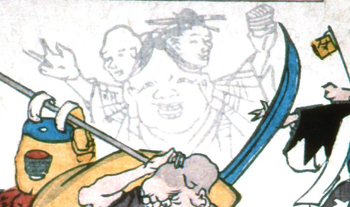

お多福の頭に、2人分の人頭がのっている化物。人頭は男女である。両腕を大きく広げている。着物の柄が蜘蛛の巣のようにみえる。
出典：親書誌：A5_pushkin_0021：こしをしの図；コシオシノズ／日付：2011／資源識別子：A5_pushkin_0021_0001_0000
Copyright (c)2010- International Research Center for Japanese Studies, Kyoto, Japan. All rights reserved.